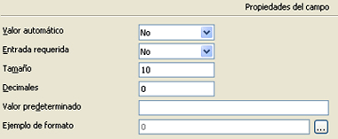

3.2. Tipos de datos
¿Recuerdas las dos condiciones que debe cumplir toda base de datos? Tener integridad y no tener redundancia.
¿Recuerdas en qué consiste definir una entidad? Asignar un nombre y determinar sus componentes (campos) y sus atributos (propiedades de los campos).
Siendo la tabla el elemento fundamental en el que se almacena la información de la base de datos, su creación debe respetar estas condiciones.
OOo Base permite determinar las propiedades de cada campo y definir así el tipo de datos que se puede introducir, asegurando la integridad. Por ejemplo, en un campo de tipo fecha solamente se podrá introducir una fecha en el formato preestablecido.
Importante
Los tipos de datos que determinan el contenido de un campo pueden ser:
- alfanuméricos.- almacenan texto y números, tratándolos como caracteres.
- numéricos.- almacenan números con los que se pueden realizar operaciones matemáticas.
- temporales.- almacenan fechas y horas.
- booleanos.- almacenan el valor SI o NO.
- especiales.- se agrupan en esta categoría el resto de tipos, tales como imágenes y objetos.
| Alfanuméricos | |
| Texto [VARCHAR] | Texto de tamaño variable. |
| Nota [LONGVARCHAR] | Para texto muy largo, hasta 2 Gb. |
| Numéricos | |
| Integer [INTEGER] | Entero de 10 cifras. |
| Número [NUMERIC] | Real con los decimales fijados. |
| Float [FLOAT] | Numérico con coma flotante de precisión simple. |
| Temporales | |
| Fecha [DATE] | Valores de tipo día, mes, año. |
| Hora [TIME] | Valores de tipo hora, minuto, segundo. |
| Booleanos | |
| Sí/No [BOOLEAN] | Valor lógico Verdadero o Falso |
| Especiales | |
| Imagen [LONGVARBINARY] | Tipo de imagen. |
| OTHER [OTHER] | Tipo de objeto |
Comprueba lo aprendido
¿Qué tipo de campo corresponde a cada dato?
¡Ojo, se han incluido todos los formatos, no sólo los que aparecen en las tablas!
|
 Propiedades del campo |
Comprueba lo aprendido
Retroalimentación
Verdadero
Retroalimentación
Falso
Retroalimentación
Verdadero
Retroalimentación
Falso
Indica cuántos caracteres de la propiedad "Tamaño" serán decimales. El resto serán enteros.Para saber más
Si quieres avanzar en tus destrezas con las bases de datos, no pierdas de vista otros detalles de este panel:
- ¿Qué tamaño tiene predefinido el tipo Número [NUMERIC]?
- ¿Y el tipo Texto [VARCHAR]?
- ¿Cuáles son los formatos predeterminados de fecha y hora?